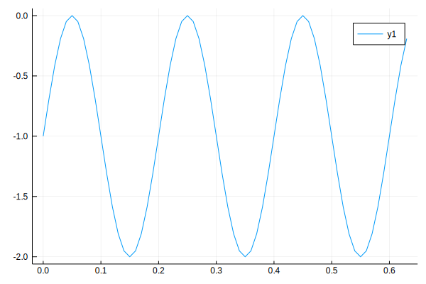

Construction and Simulation of Subsystems
In this tutorial, we will construct and simulate subsystems. A subsystem consists of connected components. A subsystem can serve as a component of a model. That is, components of a model can be a subsystem consisting of sub-components. The input/output bus of a subsystem can be specified from the input/output bus of components of the subsystem. It is also possible that a subsystem may have no input/output. That is, the input or output of a subsystem is nothing.
Construction of Subsystem
Like the construction of a model, a subsystem is constructed by constructing the sub-components of the subsystem and connecting the sub-components.
Since a subsystem serves a standalone component in a model, the components of the subsystem must be connected to each other. Otherwise, the subsystem cannot take step which in turn causes the simulation to get stuck.
In this example, we will construct a subsystem consisting of two gain components and a memory component.
using Jusdl
gain1 = Gain(Bus(), gain=2.)
gain2 = Gain(Bus(), gain=4)
mem = Memory(Bus(), 50, initial=rand(1))Memory(ndelay:50, input:Bus(nlinks:1, eltype:Link{Float64}, isreadable:false, iswritable:false), output:Bus(nlinks:1, eltype:Link{Float64}, isreadable:false, iswritable:false))Since these components will serve as a subsystem, we must connect them. In this example, these components are connected in series.
connect(gain1.output, mem.input)
connect(mem.output, gain2.input)Now, we are ready to construct the subsystem.
sub = SubSystem([gain1, gain2, mem], gain1.input, gain2.output)SubSystem{Bus{Link{Float64}},Bus{Link{Float64}},Link{Float64},Link{Bool},Array{AbstractStaticSystem,1}}(Bus(nlinks:1, eltype:Link{Float64}, isreadable:false, iswritable:false), Bus(nlinks:1, eltype:Link{Float64}, isreadable:false, iswritable:false), Link(state:open, eltype:Float64, hasmaster:false, numslaves:0, isreadable:false, iswritable:false), Link(state:open, eltype:Bool, hasmaster:false, numslaves:0, isreadable:false, iswritable:false), Callback[], UUID("96820951-1452-4c8b-ad1a-2b8ee8b895d8"), AbstractStaticSystem[Gain(gain:2.0, input:Bus(nlinks:1, eltype:Link{Float64}, isreadable:false, iswritable:false), output:Bus(nlinks:1, eltype:Link{Float64}, isreadable:false, iswritable:false)), Gain(gain:4, input:Bus(nlinks:1, eltype:Link{Float64}, isreadable:false, iswritable:false), output:Bus(nlinks:1, eltype:Link{Float64}, isreadable:false, iswritable:false)), Memory(ndelay:50, input:Bus(nlinks:1, eltype:Link{Float64}, isreadable:false, iswritable:false), output:Bus(nlinks:1, eltype:Link{Float64}, isreadable:false, iswritable:false))])Note that the input bus of gain1 and output bus of gain2 is specified as the input and output bus of the subsystem sub. That is, we have a single-input-single-output subsystem.
To construct the model, we drive this subsystem with a generator and save its output in a writer. Thus, we construct other remaining components.
gen = FunctionGenerator(sin)
writer = Writer(Bus())Writer(path:/tmp/5936e66c-9c84-4f42-adcf-8e750d339786.jld2, nin:1)Then, to construct the model, we connect the components of the model
connect(gen.output, sub.input)
connect(sub.output, writer.input)At this point, we are ready to construct the model
model = Model(gen, sub, writer)Model(blocks:AbstractComponent[FunctionGenerator(outputfunc:sin, nout:1), SubSystem{Bus{Link{Float64}},Bus{Link{Float64}},Link{Float64},Link{Bool},Array{AbstractStaticSystem,1}}(Bus(nlinks:1, eltype:Link{Float64}, isreadable:false, iswritable:false), Bus(nlinks:1, eltype:Link{Float64}, isreadable:false, iswritable:false), Link(state:open, eltype:Float64, hasmaster:false, numslaves:0, isreadable:false, iswritable:false), Link(state:open, eltype:Bool, hasmaster:false, numslaves:0, isreadable:false, iswritable:false), Callback[], UUID("96820951-1452-4c8b-ad1a-2b8ee8b895d8"), AbstractStaticSystem[Gain(gain:2.0, input:Bus(nlinks:1, eltype:Link{Float64}, isreadable:false, iswritable:false), output:Bus(nlinks:1, eltype:Link{Float64}, isreadable:false, iswritable:false)), Gain(gain:4, input:Bus(nlinks:1, eltype:Link{Float64}, isreadable:false, iswritable:false), output:Bus(nlinks:1, eltype:Link{Float64}, isreadable:false, iswritable:false)), Memory(ndelay:50, input:Bus(nlinks:1, eltype:Link{Float64}, isreadable:false, iswritable:false), output:Bus(nlinks:1, eltype:Link{Float64}, isreadable:false, iswritable:false))]), Writer(path:/tmp/5936e66c-9c84-4f42-adcf-8e750d339786.jld2, nin:1)])The next step is to simulate the model
sim = simulate(model, 0, 0.01, 10)Simulation(state:done, retcode:success, path:/tmp/Simulation-25fb0006-87d4-48ff-8fec-97e17ccffb47)We, then, read the simulation data from the writer and plot it.
using Plots
t, x = read(writer, flatten=true)
plot(t, x)qt5ct: using qt5ct plugin